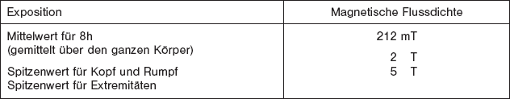
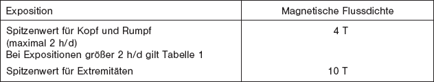

| Im Bereich von Wissenschaft und Forschung und im Einzelfall bei medizinischer Anwendung dürfen die Werte in Tabelle 2 angewendet werden, wenn der Betreiber der Anlage sicherstellt, dass | ||
| - | die verbindlichen Beschaffenheitsanforderungen nationaler Rechtsvorschriften, die einschlägigen Gemeinschaftsvorschriften umsetzen, von der Anlage erfüllt werden, | |
| - | für die Arbeitsplätze Gefährdungsanalysen nach dem Arbeitsschutzgesetz unter besonderer Beachtung der Gefahren durch EM-Felder durchgeführt und dokumentiert werden, | |
| - | die notwendigen Schutzmaßnahmen getroffen sind, | |
| - | Tätigkeiten unter fachkundiger ärztlicher Aufsicht oder in Anwesenheit eines Sachkundigen durchgeführt werden. | |
